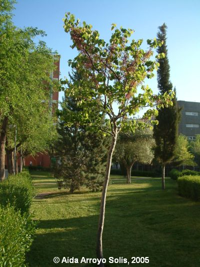
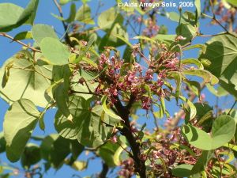

|
Cercis
siliquastrum L., Sp.
Pl. 374 (1753)
|
Leguminosas |
| Árbol del amor, árbol de Judas | Árbol caducifolio |
Árbol caducifolio, hermafrodita, de 4,35 m de altura*, con tronco de 18,5 cm de diámetro, de corteza rugosa, resquebrajada y de color pardo-claro (debido a su corta edad ); copa irregular, abierta, algo aparasolada, con el ramaje tortuoso. Hojas simples y alternas, orbiculares o reniformes, acorazonadas, y largamente pecioladas con pecíolos rojizos engrosados en el ápice; lámina de c. 5 x 7 cm y c. 0,6 mm de grosor, entera, cordada en la base, con el ápice emarginado; margen entero y nerviación palmatinervia; haz verde y el envés glauco.
Inflorescencias racemosas, que
nacen de las ramas e incluso del mismo tronco (caulifloria).
Flores hermafroditas de c.
1,5 x 1 cm, largamente
pediceladas, zigomórfas,
que aparecen a lo largo de las ramas antes de la aparición de
las nuevas hojas
(precoces); cáliz con 5
sépalos
parcialmente soldados, acampanado, giboso en la base, con 5 dientes
cortos y de
color rosa; corola papilionácea de
prefloración
carinal, dialipétala y rosácea; androceo con 10 estambres
libres rosados;
gineceo sincárpico, con ovario lineal súpero y estilo
violáceo incurvo.
Fruto tipo legumbre,
de c.10 cm de longitud, aplanado, péndulo, de color pardo y
persistente; cada legumbre contiene 8-12 semillas ovadas y pardas de
5-7 mm.
|
 |
|
 |
Observaciones:
El nombre genérico procede del griego cercis que significa navecilla, aludiendo a la forma de la legumbre o de la quilla de la corola; el específico siliquastrum se forma por siliqua: legumbre, y -astrum, que indica parecido imperfecto (2). Cultivado frecuentemente como árbol ornamental por su gran atractivo decorativo en su floración. También llamado árbol de Judas ya que es tradición que de este árbol se ahorcó Judas Iscariote. |
| Área de origen.- Sureste de Europa y Oeste de Asia (1). Se ha citado asilvestrado en algunos puntos de Valencia y Andalucía (2). | |
| Uso en el campus: un único
ejemplar joven, como árbol ornamental |
Localización: |
| *
Ejemplar muy joven, los adultos miden 5-10 m (2). (1) Rehder, A. A. (1949). Manual of Cultivated Trees and Shrubs, hardy in North America, 2ª Ed., N. York, USA. 996 pp. (2) López Gonzalez, G. (1995). La guía de INCAFO de los árboles y arbustos de la Península Ibérica, INCAFO, 865 pp. |
|
| Aída
Arroyo Solís
& Carlos Romero Zarco, 2005 |
|